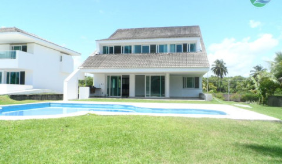

Our commitment to you is that we source our coffee beans from the finest estates and plantations from around the world. Our team visits these plantations to assess and determine the quality of coffee before it makes it to our shortlist. Which is why we have a really short list, because to us, only the best matter. We also ensure the farms we work with are free from slave labour and any other malpractice and are ecologically responsible and follow ethical practices.
Lima Gold Coffee Plantations, Ethiopia
Lima Gold Coffee Plantations, Ethiopia We came across Lima Gold Plantations by chance during our visit to Ethiopia in 2018. Ever since then, we’ve been mesmerized by the blends from this amazing estate. And your love for unique blends from this plantation makes our association strong.
Attaca Estate, Brazil
This popular estate was the subject of intrigue after a number of UFO videos emerged from the region in 2008. We’re sure the UFOs were there for the amazing Arabica that they cultivate over there. And we agree. Attaca produces some of the finest coffee and we’ve got them all to prove our point.
Vardha Plantations, India
Our coffee hunt in South India sprung up a surprise in 2019 when we came across Mr. Rajamani Vardha who’s great grandfather established Vardha Plantations in Karnataka, India in the late 1800s on orders of a British general who wanted great coffee. More than a century later, Vardha Plantations still produce their uniquely amazing blend that has come to be a crowd favourite with us.